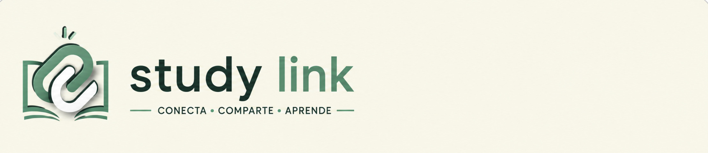

Encuentra tutores y grupos de estudio de tu propia escuela

Study Link es la plataforma que conecta a estudiantes de tu misma escuela para resolver dudas, agendar tutorías y armar grupos de estudio, todo en un solo lugar. Nada de buscar ayuda por grupos de WhatsApp o esperar a que alguien conteste: aquí encuentras tutor, agendas y listo. Misión Que pedir ayuda con una materia sea tan fácil como mandar un mensaje. Creemos que el mejor apoyo para entender algo casi siempre está en el compañero que ya lo dominó, y Study Link solo hace que sea fácil encontrarlo. Lo que puedes hacer aquí Agendar tutorías con estudiantes de semestres avanzados Unirte a grupos de estudio de tu materia Calificar y recomendar tutores ¿Cómo funciona? Te registras con tu correo institucional Buscas tutor por materia, disponibilidad o calificación Agendas la sesión y te conectas directo con tu tutor ¿Para quién es? Para cualquier estudiante que necesite un empujón con una materia, y también para quien quiera compartir lo que sabe, ganar experiencia enseñando y ayudar a otros de paso.
Agenda una sesión con un tutor de tu materia cuando lo necesites.
Únete a grupos por materia y prepárense juntos para los exámenes.
Consulta calificaciones y reseñas antes de elegir a tu tutor.